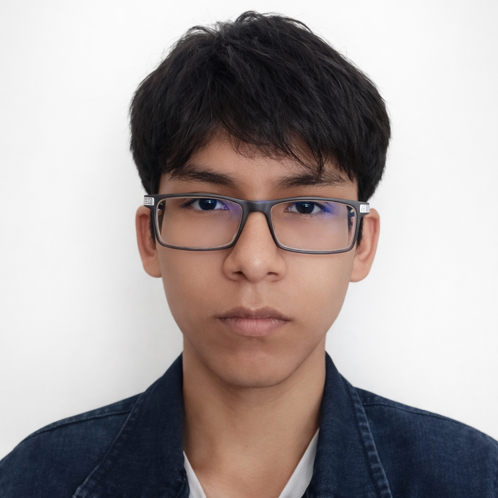

Estudiante de Ingeniería en Sistemas | Enfoque en Ciberseguridad
18 años
Estudiante de Ingeniería en Sistemas con fuerte interés en Ciberseguridad y Programación. Destaco por mi capacidad de análisis, resolución de problemas matemáticos y adaptación rápida a nuevos entornos tecnológicos. Mi objetivo es desarrollarme profesionalmente en el área digital y construir una empresa tecnológica propia en el futuro.
Elegí la carera porque Desde muy temprana edad, descubrí que el mundo que me rodeaba estaba impulsado por fuerzas invisibles pero poderosas: la lógica, la energía y, sobre todo, la tecnología. Crecí observando cómo las herramientas digitales transformaban la vida cotidiana, desde una simple calculadora hasta las primeras computadoras que llegaron a mi entorno. Esa curiosidad innata por entender el "cómo" y el "por qué" de las cosas me llevó a explorar, desarmar y volver a armar equipos, no solo por entretenimiento, sino por una necesidad profunda de comprender su funcionamiento interno. Mi afinidad por las matemáticas fue el complemento perfecto para esta inclinación tecnológica. Los números, las ecuaciones y los problemas complejos nunca fueron un obstáculo para mí; al contrario, siempre los vi como acertijos fascinantes que esperaban ser resueltos. Recuerdo con claridad las tardes dedicadas a resolver problemas de álgebra y geometría, no por obligación, sino por el placer de encontrar la solución lógica y elegante a un desafío. Esa capacidad para enfrentar la complejidad con una mente analítica y metódica se convirtió en la base de mi carácter y de mi enfoque ante la vida. Elegí esta carrera porque comprendí, de manera profunda y personal, que la tecnología no es solo una herramienta, sino el verdadero motor del mundo actual. Estamos inmersos en una era de transformación digital sin precedentes, donde cada aspecto de la sociedad —la educación, la salud, la economía, las comunicaciones— está siendo redefinido por la innovación tecnológica. Quiero ser parte activa de ese cambio, no un simple espectador. Deseo contribuir con mi granito de arena para construir soluciones que mejoren la calidad de vida de las personas y optimicen los procesos que nos rodean.
Especializarme en Ciberseguridad y Desarrollo de Software, adquiriendo experiencia práctica que me permita fundar mi propia empresa tecnológica, orientada a soluciones digitales seguras, eficientes e innovadoras.
Unidad Educativa Tomás Katari – Sucre
Graduado de Secundaria
Año de egreso: 2025
Email: erwincallahuara608@gmail.com
Teléfono personal: 67 62 43 06
Contacto de referencia: 76120159